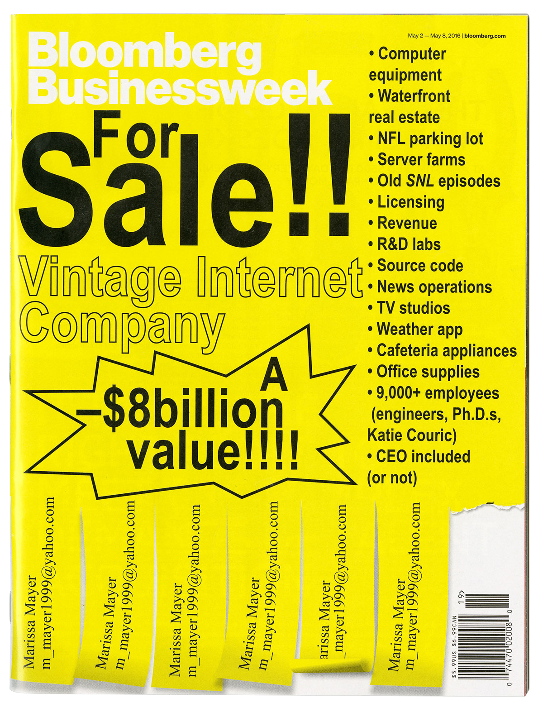
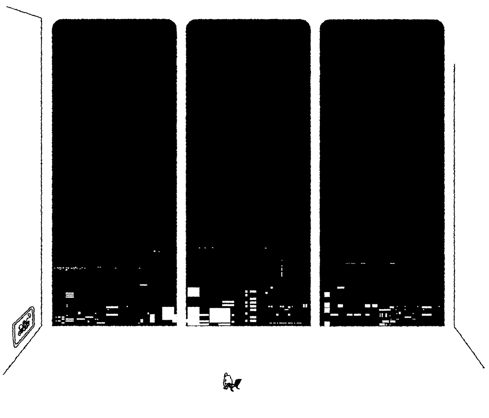
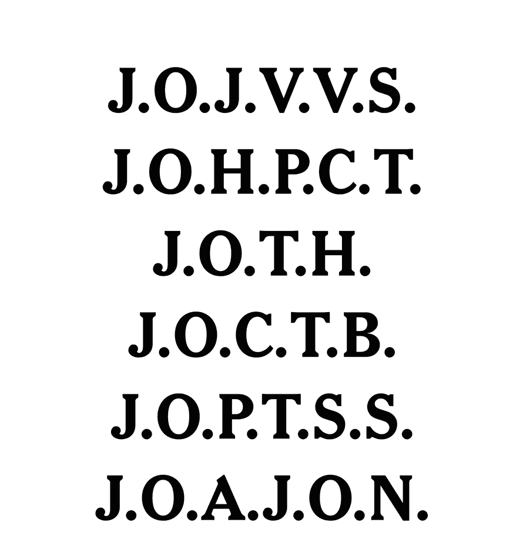

Play with some buttons on this little web magazine about office culture on nytimes.com! The Office: An In-Depth Analysis of Workplace User Behavior↗
2021 — layout and type design
Homer ‘A–OK’ Catalog
A 160-page catalog that I designed! For the record the only creative director on this project was Frank Ocean.
2021 — sketching, designing and 3D modeling
Dream Chairs for SSENSE
Durga, Jez and Olivia on the SSENSE editorial team asked me to visualize designers’ dream chairs: by interpreting their text descriptions of what the chair would be like. I levelled up in Cinema4D and also got a beginner’s handle on Marvelous Designer! Love to take on creative work where you get to learn new skills along the way. See the full project on SSENSE here.
2020 — creative direction, front-end development, video production
Election Distractor
(Link) A trove of games, comedians, meditations and self-care prompts as counterprogramming for the nervous week (or weeks) around the election.
2019 — animation
Do You Remember The First Time?
In Feb. 2019, the Blonded team asked me to create bubble letters animated to jiggle and pop nostalgically. This was featured on blonded.co for a couple of months and printed as the back layer of this double-sided poster which can be seen in various teenage bedrooms across America :' )
-

- 
-

-

-

-

2013–2016
Bloomberg Businessweek covers
A selection of cool covers I had made over the years.
2020 — design, front-end dev
What Is Celebrity?
(Link) What is an influencer? Are they more relevant than Brad Pitt now? We asked NYT readers to vote on that by assembling an inexhaustive glossary of what fame is today. 1,731,795 casted ballots later, the verdict is in. Designed with and developed by Rebecca Lieberman.
-

-

- 
-

-
For more editorial illustrations, check out this Google deck!
-

2018 – 2020
Editorial illustrations
A bunch of editorial illustrations
for The New York Times and others. I like to work with 2D and 3D animation, vector drawings, photo collages and found imagery. Occasionnaly I do hand-drawn / painted stuff too.
2020 — design, front-end development
Juneteenth Essay Collection
(Link) Editor Veronica Chambers had envisioned a small essay collection that puts hopefulness and exuberance at the foreground of this year’s Juneteenth celebrations.
2019 — typography, animation
Hannahs
Titles design for a short film written and directed by India Donaldson. Play with sound here.
2020 — editing, composition, light front-end
An Ecotherapeutic Meditation In Ten Steps
(Link) At the height of the pandemic, photographers Jessica Lehrman and Phillip T. Annand brought the outdoors to many of us practicing social distancing at home. We composed and displayed over ten slides these nature recordings along with gentle chimes and tips from mindfulness experts. Collaboration with photo editor Eve Lyons and editor Joanna Nikas.
2018 — creative direction, illustration, light front-end development
The Royal Wedding: Frequently Asked Questions
(Link) Every possible question about Royal Wedding answered in a relic of an internet format. Each click a potential reward! Read more about the project at ItsNiceThat here. Project in collaboration with Umi Syam who was insanely patient with me at a time when I wanted badly to learn css and jquery which involved a lot of me touching things and breaking them. If you don’t like to support journalism and do not have a nytimes.com subscription, here is a screen recording.
2020 — creative direction, project management
Mr. Louboutin’s Guided Tour
(Link) You know those red-bottomed stilettos beloved by republican-looking c-suite conference attending women but also red-carpet trotting celebs? The person who makes them is a lovely soul and a true delight! Here we have Mr. Louboutin himself as your holographic guide, telling you all about his favorite pieces and also where to press buttons.

2019 — creative direction, front-end development
Gen X Is A Mess
(Link) An online magazine about the generation sandwiched between boomers and millennials. My gen-xer co-workers looked inward upon their impact on style and culture. The design has a draw-on feature by my millennial co-conspirator Aliza Aufrichtig; it sneakily happens behind the scenes on the parts of the page already visited by the user. If you hate to read the truth and do not have a nytimes.com subscription, here is a screen recording.

2020 — creative direction
The Joy Of Essay Collection
(Link) A short story collection by writers on what small things they take pleasure in. We had asked our colleagues at the Times to make simple doodle for us, which I then took and animated to draw on.
-

-

-

-

-
If you like this, please peruse this very special Google deck of my print layout designs!
-

-

-

2013 — cover design, layout and type design
The How To Issue
This issue is very special to me because it had paved the a way for me of thinking about and going about making design and making sense of things visually that remains very influential in my work.
2016 — editorial design
Total Power Move
A self published magazine made at Matter Studios, a start-up I worked at in 2016. Edited by Mark Lotto, photo edited by Emily Keegin, designed with Kurt Woerpel!
2019 — art direction, layout design, front-end development
The American Roadtrip
(Link) Photographers Farah Al Qasimi, Daniel Arnold, Jessica Lehrman, and Andre Wagner drove across the continent, looking for symbols of America and Americanness. The design is a vertical chronology through place and time, retelling each photographer’s week-long journeys.
2019 — creative direction
Y2K @ 20
(Link) This is one of my favorite Times projects thus far and it is best if you could launch the link and poke around on as many things with blue underlines as you can, poke and keep poking deeper and deeper. Edited with Joanna Nikas and Choire Sicha. Development by Rumsey Taylor and Aliza Aufrichtig.
But wait, there is more!
I love this Jenny Odell rabbit hole! A Business With No End↗
From 2013 – 2016, once a year I helped Businessweek put on a live conference, designing everything from placemats to large-scale environmental installations. I had the best time! Check out my installation designs in this deck here↗
In 2018 we rounded up the year’s news, shoved it in an endurance game where you get awarded the more you reminded yourself of a year you wished to forget. 2018: The Year In Dissonance↗
-
Facts:
- In exchange for USD, she can design layouts, art direct campaigns, create a brand identity, make little websites, make illustrations by hand or with a computer, animate in 2D or 3D
- Formerly ‘Visual Editor’ at The New York Times
Styles desk (2018 – 2021) - Formerly the Deputy Creative Director at Bloomberg Businessweek (2011 – 2016)
- Grew up in Toronto
- Immigrated from Hong Kong
- Taught three semesters at Parsons from 2017–2018
- Skillful
- Hardworking
- Indesign, Photoshop, Illustrator
- After Effects, Cinema 4D
- HTML/CSS (JS)
-
Press:
- Cover Feature, Computer Arts Magazine, January 2020
- Podcast Episode, Webbys, November 2019
- Feature, It’s Nice That, December 2018
- Interview, SSENSE, June 2018
- College Consent Project, Journalism.uk, May 2018
- Royal Wedding FAQ, ItsNiceThat, April 2018
- The Year According To, Walker Art Magazine, December 2017
- Early works, AIGA Eye on Design, July 2017
- Bookshelf, ItsNiceThat, May 2017
- IWD, ItsNiceThat, March 2017
- Businessweek covers, Gizmodo, November 2017
- School projects, ItsNiceThat, October 2014
-
Talks:
- An Interesting Day and Night, Amsterdam, August 2018
- Society of News Design, New York, March 2018
- Against All Odds at Pratt Institute, Brooklyn, March 2018
- T Magazine Spain, Madrid, February 2018
- Fall Lecture Series at RISD, Rhode Island, October 2017
- AMPA, Calgary, March 2016
- Typographics at Cooper Union, New York, June 2016
-
Clients include:
- Christine And The Queens
- Columbia GSAPP
- Google Creative Labs
- Medium
- Breaker Magazine
- All work on this site © Tracy Ma 2020